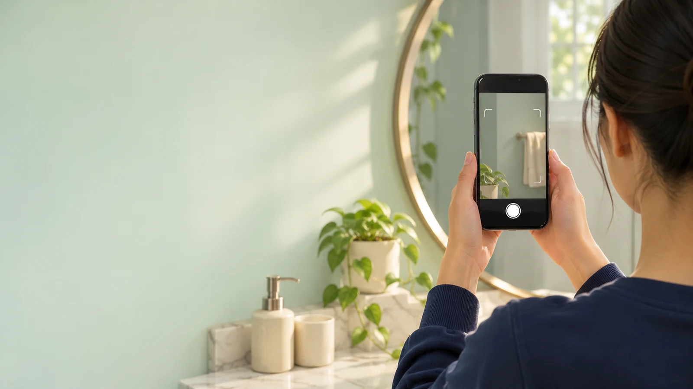
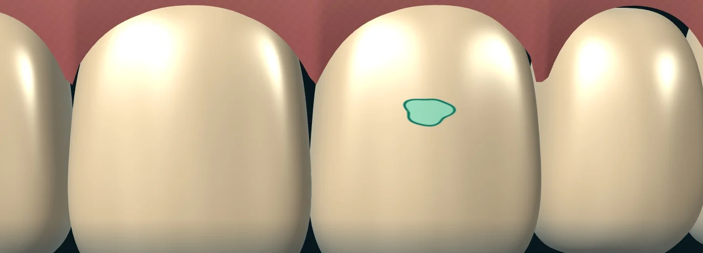

Bir beyaz
lekenin izinde.
Telefonla çekilen bir ağız içi fotoğrafında hangi ayrıntı dikkate değer? DentAI’ı bu soruyla geliştirdim. Tek bir örnek üzerinden nasıl çalıştığını göstereyim.
Örneği birlikte inceleyelimFotoğraftan ön rapora.
Bir adım seç. Aynı örneğin fotoğraf çekiminden hekim değerlendirmesine kadar nasıl ele alındığını izle.


Temsili çekimİlk iş, net bir kare.
Kullanıcı, ekrandaki yönlendirmeyi izleyerek ağız içi fotoğrafını çeker. Kadrajın ve ışığın tutarlı olması, aynı bölgeye daha sonra tekrar bakabilmek için önemli.
Bir maskeyi
okumak.
Bir alanı işaretlemek işin yarısıydı. Asıl soru, o işareti gören kişiye ne söylemem gerektiğiydi.
Emre Küçükgöçer
Her beyazlık aynı şeyi mi anlatır?
Bir diş telindeki yansıma da mine üzerindeki açık renkli bir alan da fotoğrafta beyaz görünebilir. Modeli hazırlarken diş teli, tartar, plak ve tükürük parlamalarını özellikle karıştırılabilecek örnekler olarak ele aldım. OpenCV ve NumPy ile görüntüyü hazırladım, CLAHE ile yerel kontrastı düzenledim.
Model bölgeyi nasıl işaretliyor?
Python ve PyTorch ile çalıştım. Ultralytics YOLOv8-Nano’nun örnek segmentasyonu, her bulgu için ayrı bir piksel maskesi üretiyor. Böylece dişin tamamı yerine ilgili yüzeyin sınırı gösterilebiliyor. Maske eğitiminde piksel bazlı ikili çapraz entropi kullandım.
Gemini’ye hangi görevi verdim?
Gemini 2.0 Flash’a görüntüyü ve modelin işaretlediği bölge bilgisini birlikte verdim. İstemi, gözlemi gündelik dille açıklaması ve belirsizliği koruması için sınırladım.
Örnek yönerge: Yalnızca işaretlenen alanı anlat. Görüntüden nedenini belirleyemiyorsan bunu açıkça söyle. Tedavi önerme.
Prototipte neler var, sırada ne var?
Hackathon demosunda görüntü işleme ve açıklama adımlarını Python ve Streamlit ile bir araya getirdim. Telefonda çıkarım için TensorFlow Lite ve FP16/INT8 küçültme seçenekleri üzerinde çalıştım. Cihazda çalışan tespit ile çevrimiçi Gemini açıklaması iki ayrı işlem.
Mobil ürün planında Flutter ve Dart ile yönlendirmeli çekim, izinle paylaşılan ön raporlar için Firestore ve gerektiğinde bir diş hekimine yönlendirme var. Klinik kararı hekim veriyor.
Kullanıcı ve klinik bu akışta nerede?
Planladığım B2B2C modelinde temel tarama kullanıcıya ücretsiz sunuluyor. İleri analiz aboneliği, anlaşmalı kliniğe yönlendirme ve hekimin hastanın paylaştığı ön raporu okuyabileceği klinik paneli, modelin gelir kalemleri.